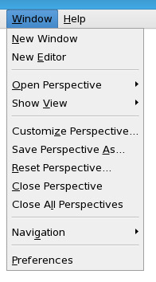

Window menu
The Windows menu of the SmarTest Work Center contains the controls for navigation and managing views and perspectives.

Menu |
Function/Tool |
|---|---|
New Window |
Opens a window displaying the SmarTest Work Center. |
|
New Editor |
Opens another instance of the editor in focus. |
Open Perspective |
Provides links to the commonly used perspectives and access to the Open Perspective dialog box. |
|
Show View |
Provides links to the commonly used views and access to the Show View dialog box. |
|
Customize Perspective |
Displays the Customize Perspective - Setup dialog box, used to configure how the active perspective is to be displayed, for example, which toolbars to be displayed. |
|
Save Perspective As ... |
Displays the Save Perspective As ... dialog box, used to assign a name to the active perspective. |
|
Reset Perspective |
Displays the Reset Perspective dialog box, used to reset the perspective to its default configuration. |
|
Close Perspective |
Closes the active perspective. |
Close All Perspectives |
Closes all open perspectives. |
|
Navigation |
Provides navigation options such as:
|
Preferences |
Opens the Preferences dialog box. |
Functional changes
- Introduced in SmarTest 7.5.4